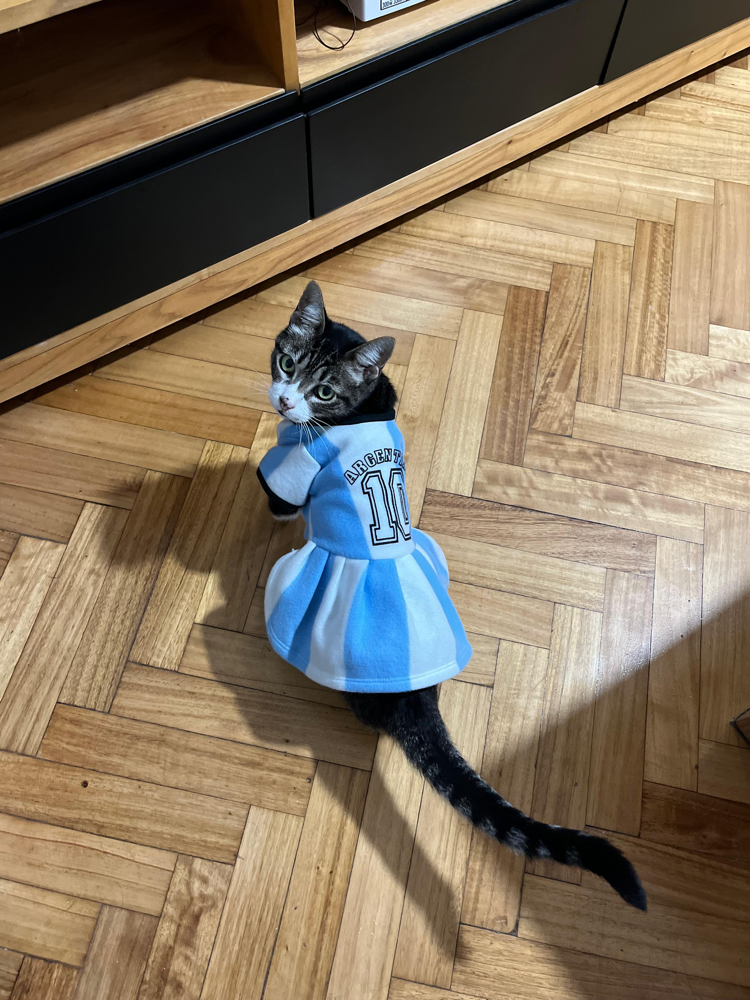

Sumate a la causa
Existen muchas formas de ayudar a los animales que más lo necesitan. Cada aporte, por pequeño que sea, nos permite seguir rescatando, cuidando y encontrando hogares responsables para ellos.

❤️ Adoptá
Darle un hogar a un animal rescatado es darle una nueva oportunidad de vida llena de amor y cuidados.
Más información
🏠 Transitá
Ofrecé un hogar temporal mientras el animal se recupera y encuentra una familia definitiva.
Quiero transitar

🥣 Doná
Podés colaborar con alimento, medicamentos, mantas o aportes económicos para los rescates.
Donar ahora